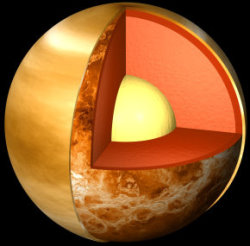

Vénus est la deuxième planète du système solaire. Il s'agit d'une planète tellurique. C'est l'astre le plus brillant du ciel après le Soleil et la Lune, c'est elle que l'on appelle l'étoile du berger.
Vénus est connue depuis l'âge de bronze ; les Babyloniens l'avait associée à la déesse Ishtar.
Vénus est, plus qu'aucune autre, semblable à la Terre.
Elle tourne autour du Soleil en 225 jours et sur elle-même en 243 jours dans le sens rétrograde.
Vénus étant une planète inférieure, on peut observer des phases comme la Lune. Ces observations permirent à Galilée d'affirmer que la théorie d'héliocentrisme de Copernic était vraie. A de rares occasions, on peut également observer le transit de Vénus devant le Soleil.
Vénus a reçu la visite de nombreuses sondes, la première fut Mariner 2 en 1962, puis par Pioneer Venus et Venera 7. La première sonde à se poser sur Vénus fut Venera 9 qui transmit la première photo de sa surface. Enfin, plus récemment, l'orbiteur Magellan nous a fourni une carte détaillée de sa surface en utilisant un radar. (Cartographie de vénus) La pression à la surface de Venus est de 90 atmosphères (la même qu'à 1 km sous le niveau de la mer).
L'atmosphère est composée essentiellement de dioxyde de carbone (environ 95% de CO2, 5% d'azote).
Elle possède plusieurs couches de nuages, de plusieurs kilomètres d'épaisseur, qui sont composés d'acide sulfurique. Ces nuages rendent la surface invisible pour un observateur placé en orbite.
Cette atmosphère dense provoque un effet de serre important et la température à la surface peut atteindre 740 K.
Des vents violents (350 km/h) soufflent au sommet des nuages alors qu'au niveau du sol ils soufflent à moins d'un kilomètre par heure. Les paysages sont très variés, généralement pierreux et désertiques.
STRUCTURE
Le noyau de Vénus est constitué de deux parties : un noyau externe constitué de fer et de nickel liquides qui représenterait environ 30 % du rayon de la planète ; un noyau interne composé de fer et de nickel solides qui représenterait environ 17 % du rayon de Vénus. Vénus posséderait un manteau représentant environ 52,66 % du rayon de la planète, composé essentiellement de silicates et d'oxydes de métaux. La croûte de Vénus est constituée d'un seul bloc de 20 km d'épaisseur environ. Il ne s'agit pas de plaques tectoniques et elle est percée de nombreux volcans.